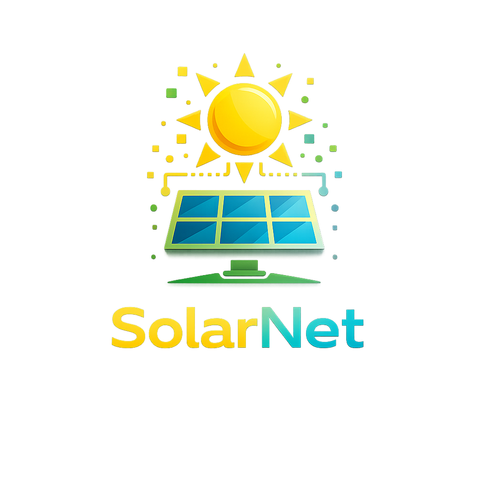

Tecnologia espacial adaptada para a Terra. Monitoramento inteligente de energia solar.
Conheça o projeto01 — Problema
02 - Tecnologia
Monitora a geração e o consumo de energia solar em tempo real.
Emite alertas inteligentes para aumentar a eficiência energética do sistema.
Analisa dados para identificar falhas, perdas e oportunidades de otimização.
Aplica conceitos da tecnologia espacial para promover sustentabilidade e economia.
03 — Objetivos
Maximizar o aproveitamento da energia solar por meio de monitoramento inteligente e contínuo.
Reduzir perdas energéticas com identificação rápida de falhas e ineficiências.
Facilitar o acesso a informações energéticas claras para usuários e gestores.
Promover sustentabilidade por meio do uso inteligente da energia solar.
04 — Público-Alvo
05 — Benefícios
Empresas que buscam reduzir custos e aumentar a eficiência energética.
Diminui custos operacionais por meio de monitoramento inteligente.
Contribui para a redução dos impactos ambientais.
Promove o uso consciente e sustentável dos recursos energéticos.
Amplia a confiabilidade dos sistemas de geração solar.
06 — Aplicação no Dia a Dia
Suporte a sistemas sustentáveis em áreas rurais e cidades inteligentes.
Aplicação em empresas e setores produtivos para eficiência operacional.
Uso em ambientes residenciais e redução de custos energéticos.